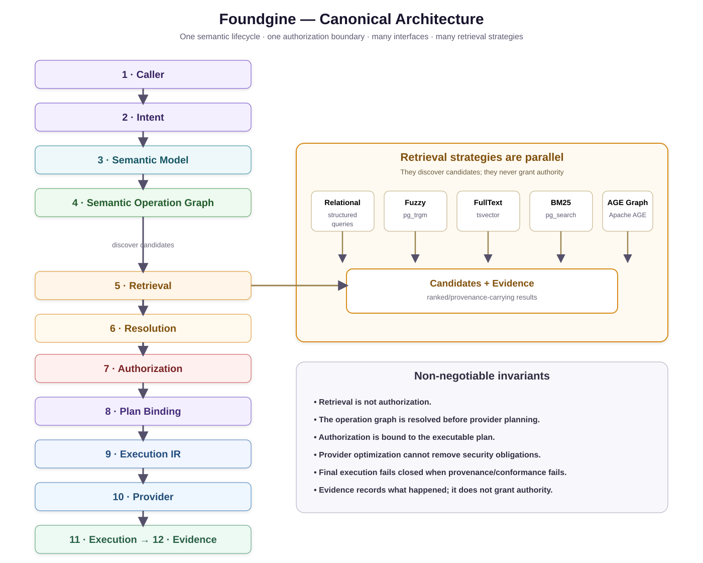

Security is part of execution, not an afterthought.
Foundgine treats caller intent as untrusted. Authorization is evaluated before planning and the security obligations are carried into the executable plan and provider boundary.
Core invariant
Untrusted intent
↓
semantic resolution + validation
↓
authorization
↓
security-preserving plan
↓
provider security conformance
↓
executionWho owns what?
| Concern | Owner |
|---|---|
| Authentication | Host/application identity system |
| Tenant and actor context | Host/application |
| Semantic authorization | Foundgine authorization policy |
| Plan security binding | Foundgine planning/execution boundary |
| Physical access | Provider execution boundary |
| Authority recovery | Optional Foundgine.Security.Authority |
Authorization layers
- Entity policy: whether a semantic resource is visible.
- Field policy: whether an individual field can be projected.
- Relationship policy: whether traversal is permitted.
- Conditional policy: resource predicates such as tenant ownership.
- Write policy: read permission does not imply mutation permission.
- Named operation policy: a domain capability can require a stronger role/evidence gate.
Capability discovery
Capability descriptions are advisory. They help callers construct valid requests, but they never grant permission. Every actual operation is resolved and authorized again under the current execution context.
Client-supplied claims
Caller-provided claims are treated as untrusted data. Reserved identity keys such as role, tenant and admin authority cannot be asserted by the caller. Recognized claims may only narrow an already-authorized operation, for example by adding a warehouse predicate or read-only scope.
Provider conformance
Authorization is not complete merely because a policy object returned “allow.” The executable plan retains the relevant security provenance and the provider boundary can enforce conformance before physical execution. Optional execution-time revalidation can fail closed when authority has changed.
High-assurance authority
Foundgine.Security.Authority is intentionally outside the core. It provides optional control-plane primitives for authority state, witness/recovery, credentials, revocation, reconciliation and recovery evidence. Applications that do not need that infrastructure do not need the package.
Security testing
The PenTest sample attacks the boundary through MCP and GraphQL. The advanced semantic sample also tests tenant predicates, field/relationship restrictions and adversarial caller claims.
The canonical security boundary

Security invariant: retrieval is not authorization. Fuzzy, full-text, BM25 and Apache AGE graph strategies can produce candidates and evidence, but they cannot grant access or bypass the authorization stage.
Next
Read AI agents next.